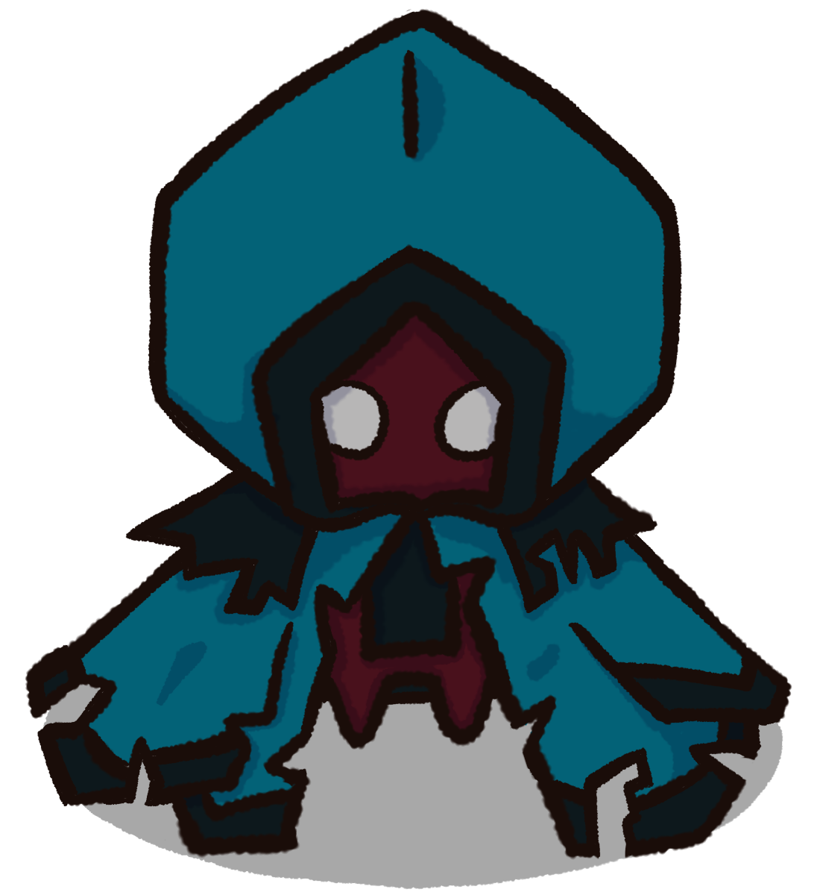

← All projects
Arena shooter
Tower of Tales
A short arena shooter inspired by Arena of the Mad King, The Binding of Isaac and Realm of the Mad God. A cultist enters the arena to defeat the boss and bring back their family.

What I built
- Created boss attack patterns and reactive decision-making to structure the main encounter.
- Implemented player movement and tuned its feel for arena combat.
- Added controller support so the game plays well across input devices.
My role
I worked on the player and boss gameplay loop, focusing on responsive movement and an encounter that reacts to the player's position and actions.
What I learned
Encounter design, input abstraction, and how boss behaviour can communicate patterns while still demanding player adaptation.
Trailer
Play it
Runs in your browser, no download. Best on desktop with a keyboard and mouse.
Like what you see?
I'm looking for my first games industry role as a gameplay or AI programmer. Studios of any size welcome.